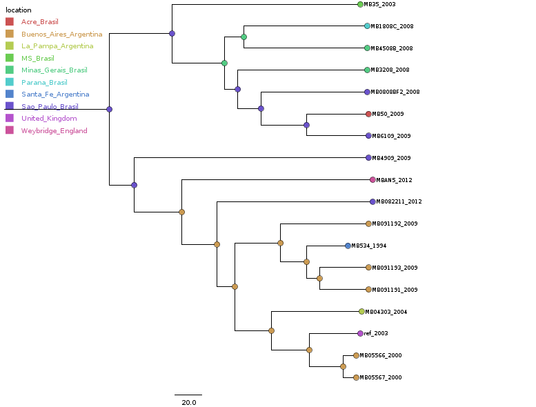
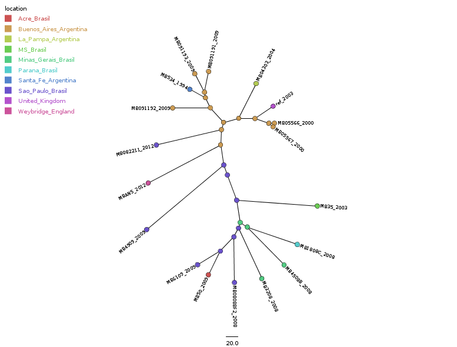
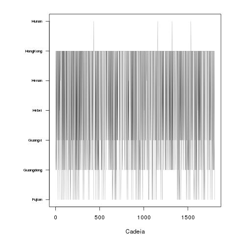
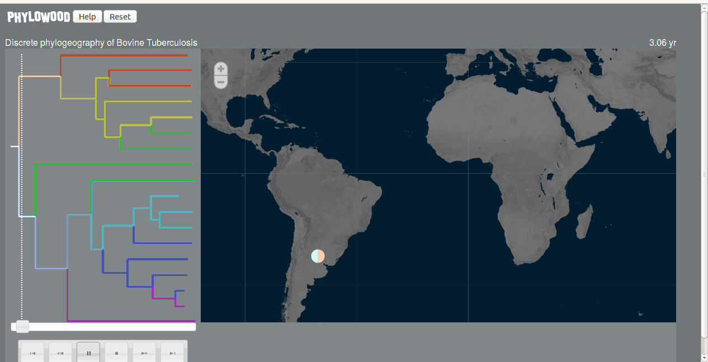
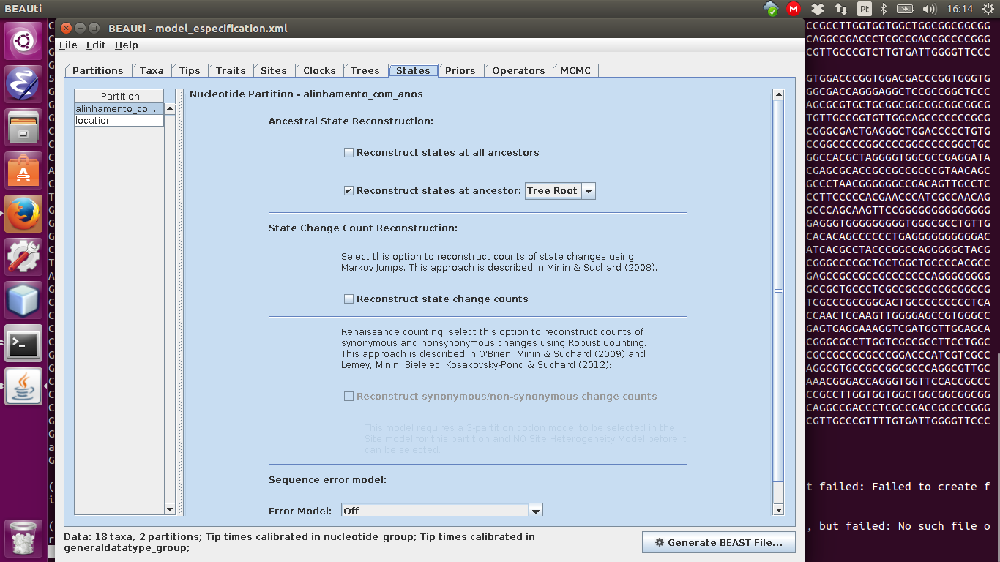
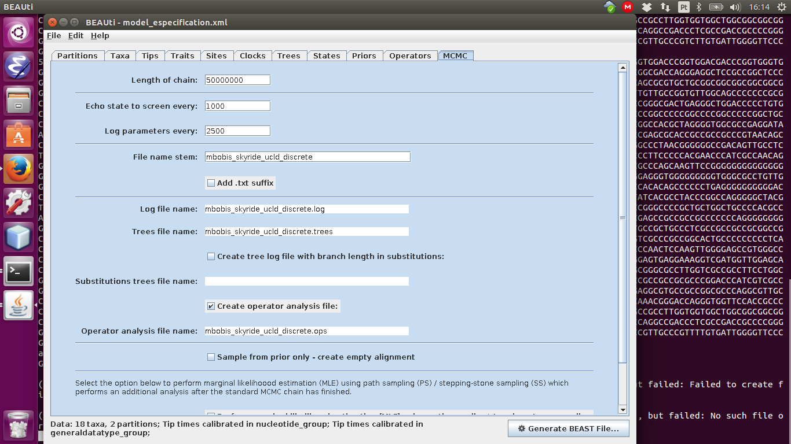

Índice
- Árvores com reconstrução ancestral
- Probabilidade do local na raiz
- Animação do spread da tuberculose
- Reconstrução ancestral da sequência
- O que fazer a partir daqui
Árvores com reconstrução ancestral
Aqui é a árvore mais provável (com maior verossimilhança)
Depois são apenas duas outras formas de apresentação.
Probabilidade do local na raiz
Mais, lembrando que não definimos uma raiz a priori, isso vem da reconstrução ancestral. A cada duas linhagens, em algum momento elas devem ter tido um ancestral em comum, o tempo até esse evento é o tempo para coalescer
Podemos calcular as probabilidades associada ao vértice mais ancestral (quando todas nossas linhagem coalescem), aqui o resultado ficou ruim.
Var1 Freq
1 Acre_Brasil 0.10196455
2 Buenos_Aires_Argentina 0.09499520
3 La_Pampa_Argentina 0.09125802
4 Minas_Gerais_Brasil 0.11070148
5 MS_Brasil 0.10262108
6 Parana_Brasil 0.10100500
7 Santa_Fe_Argentina 0.09024797
8 Sao_Paulo_Brasil 0.12211504
9 United_Kingdom 0.08954093
10 Weybridge_England 0.09560123
O ruim é que temos pouca certeza de qualquer coisa. Esse resultado é na verdade uma cadeia de markov, onde para cada iteração, definimos um estado, nesse caso, a gente ta tendo algo assim:

Ou seja, a gente não está estacionando em nenhum estado, em nenhum local, para comparar, da para olhar para a mesma figura do exemplo com h1n1
Veja que algum lugares nunca são visitados na cadeia, além disso, a probabilidade de HongKong sempre ser visitada, implica no fato de que que podemos ter uma precisão aceitavel de inferir qual a origem desse anestral nesse momento.
Resumindo, o resultado não ficou bom. Mas podemos ter uma ideia de que tipo de informção vamos ver.
Animação do spread da tuberculose
A informação do modelo pode ser usada também espacialmente para gerar visualização do "spread" da doença. Mas que não é muito confiavel ainda
Reconstrução ancestral da sequência
Além disso, uma outra informação, que pode ser muito interessante, é que além dos locais (que são um trait discreto), reconstruimos as sequências de entradas. A principio, eu estou salvando a reconstrução do ancestral que deve ser a "raiz", mas da para salvar o resultado para cada um dos ancestrais. Essa reconstrução esta no arquivo "/home/bio/projects/augusto/filogeografia/beast/mbobis_skyride_ucld_discrete.alinhamento_com_anos.states.log". Agora essa rescontrução pode ser interessante, para além de acompanha as linhagens, como a gente sabe, cada uma das bases, de onde ela vem, de qual gene ela vem, so pensar no indice que veio do gblocks e antes de usar o gblocks, o vcf. Mas talvez poderiamos acompanhar a parte alguns genes de interesse, por exemplo, os que podem vir a causar a virulência no 04303.
Se for olhar o arquivo, ele ta organizado assim:
49997500"GGTCGGTCGCGCGC...AAGC"
50000000"GGTCGGTCGCGCGC...AAGC"
O número é a posição na cadeia, e nos fizemos 50000000, salvando a cada 2500 passos. So temos que tomar cuidado para não salvar informação demais.
Além disso eu so salvei a raiz para ver como ficava, mas como podemos ver na tela do modelo, podemos salvar o estado de os ancestrais, e isso talvéz possa ser usada, como comentei, para acompanhar alguns genes de interesse, o que pode ser um resultado interessante.
Todas as opções que eu usei estão salvas no arquivo model_especification.xml na pasta /home/bio/projects/augusto/filogeografia/beast
O que fazer a partir daqui
Eu acho que para melhorar o modelo podemos tentar o seguinte
- Aumentar o número de sequências, pegando mais genomas completos depositadas no genbank, podemos pegar sequências completas com localização e ano de isolamento, usando um script de python, e a partir do fasta do genoma, comparando com o referência a gente gera um vcf, e ai usar esses vcfs em conjunto com o que ja temos.
- Para aumentar as amostras por local, podemos abandonar a informação do estado brasileiro e usar somente o pais como local, assim ficamos com uma especificidade menor, mas mais repetições por unidade amostral
- Podemos tentar usar as localizações como uma caracteristica continua, como nesse exemplo aqui